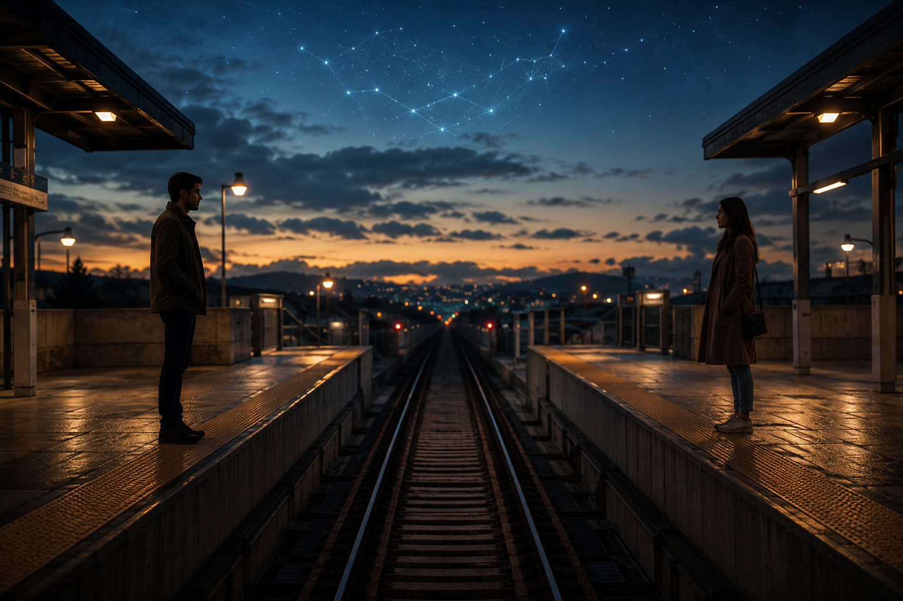

Unspoken: Poems of Love and Memory

The Thread Exists
About this poem
Some connections seem to transcend time and distance.
"The Thread Exists" explores the mysterious bond between two souls who meet as strangers, leave an imprint on one another, and somehow remain connected long after their paths separate. Whether we call it love, friendship, destiny, or something beyond our understanding, some threads seem to endure—quietly vibrating beneath the surface of ordinary life.
This poem reflects on those invisible connections and the synchronicities that seem to awaken what time could not erase.
🎵 "Sacred Harp for Relaxation - KonstantinPazuzuStudio (Pixabay Music)
